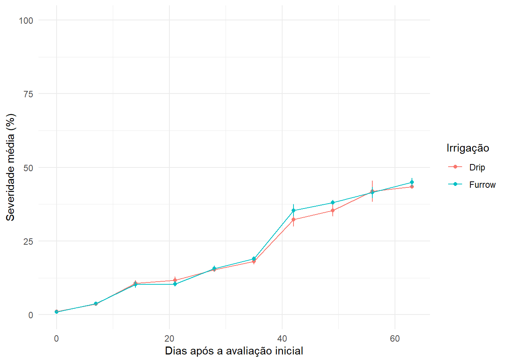
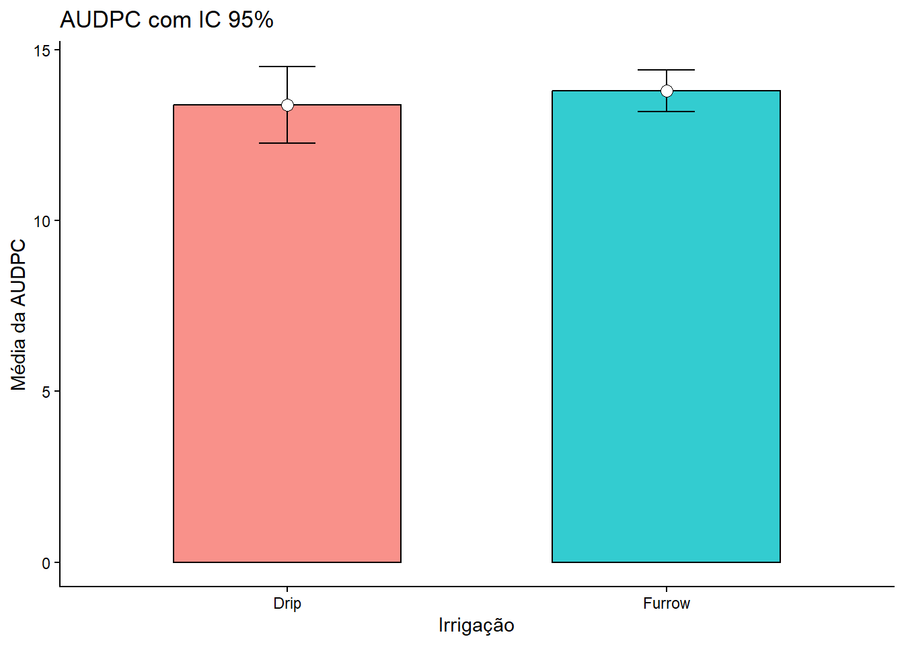
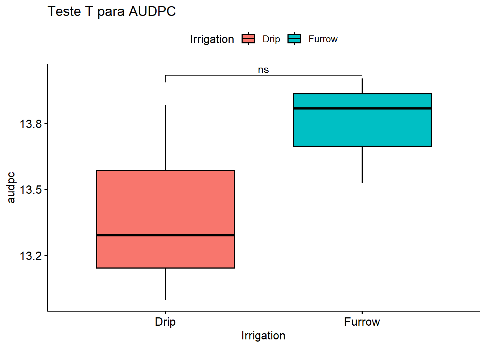
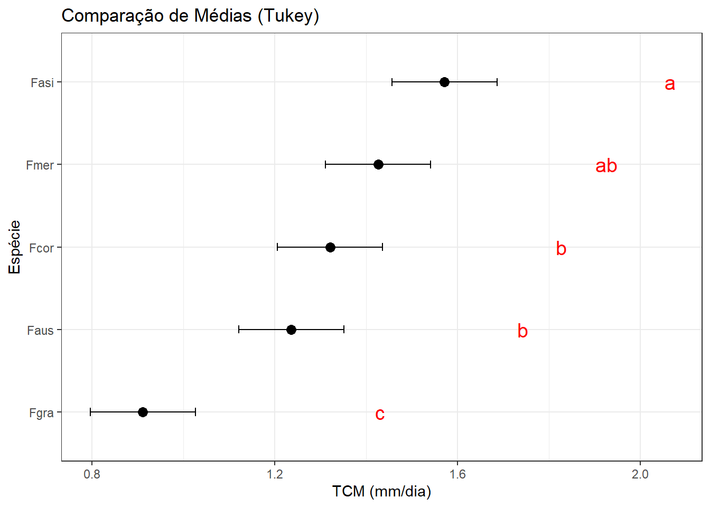
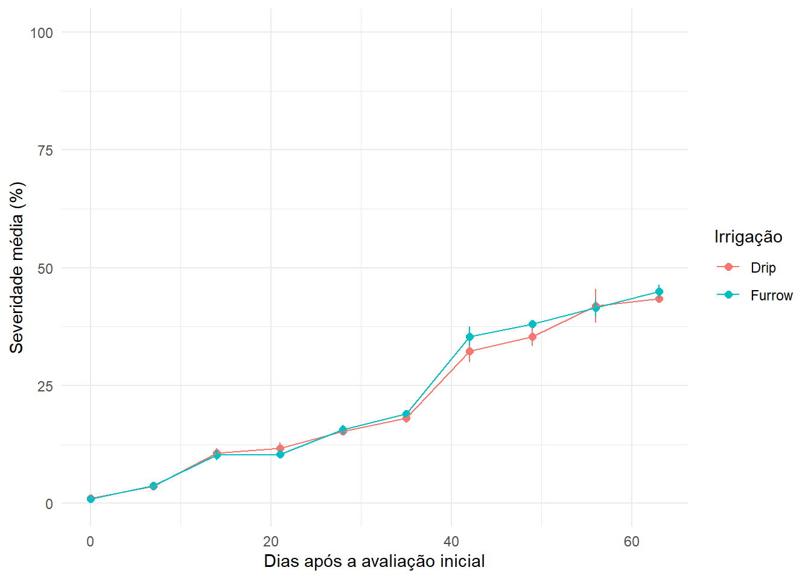
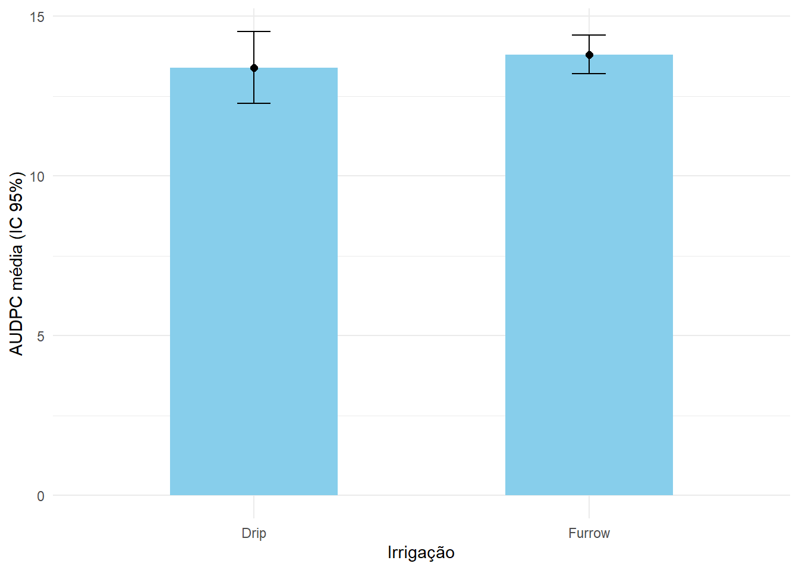
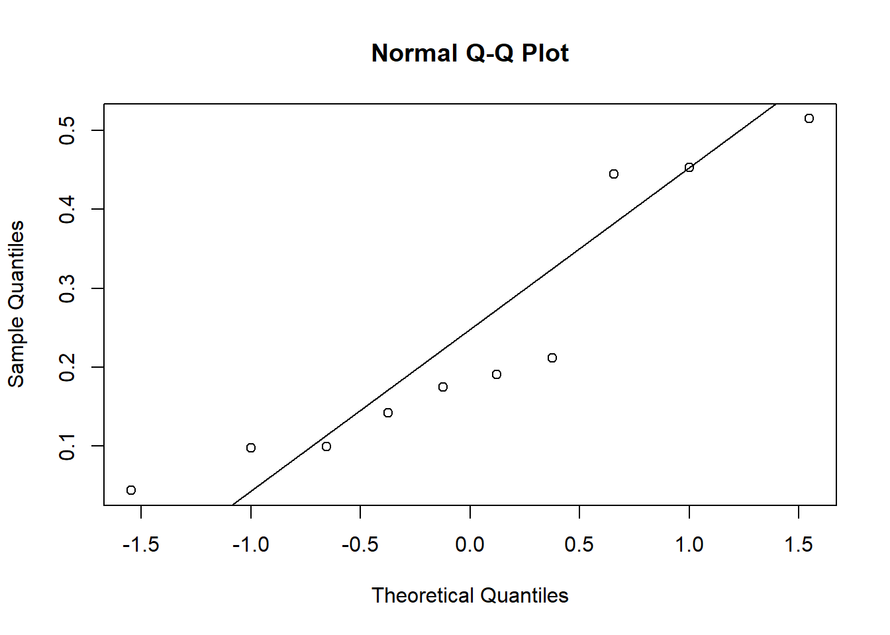

Aula 04: comparação de médias: teste t, testes não paramétricos e ANOVA
Author
Antoniel Pereira
Published
April 26, 2026
Nesta aula, vamos organizar uma sequência de análises estatísticas voltadas à comparação de médias em situações comuns em experimentos biológicos e agronômicos. O foco será em três contextos:
comparação entre dois grupos independentes;
comparação entre duas condições medidas nos mesmos indivíduos;
comparação entre três ou mais grupos.
Ao longo da aula, usaremos exemplos reais do arquivo dados_diversos.xlsx, discutindo a lógica estatística, as hipóteses, as fórmulas e a implementação em R.
1. Introdução e Importação de Dados e calculo da AUDPC
Code
library(tidyverse)library(readxl)library(epifitter)library(rstatix)library(ggpubr)library(emmeans)library(multcomp)library(multcompView)# Importação da aba "curve" (Curva de Progresso da Doença)dados <-read_excel("dados_diversos.xlsx", "curve")glimpse(dados)
O primeiro passo é visualizar como a severidade aumenta com o tempo. Usamos o erro padrão ou desvio padrão para entender a variação entre as repetições.
Code
dados |>group_by(Irrigation, day) |>summarise(mean_sev =mean(severity *100), sd_sev =sd(severity *100),.groups ="drop" ) |>ggplot(aes(x = day, y = mean_sev, color = Irrigation)) +geom_point() +geom_line() +geom_errorbar(aes(ymin = mean_sev - sd_sev, ymax = mean_sev + sd_sev),width =0.1) +ylim(0, 100) +labs(x ="Dias após a avaliação inicial",y ="Severidade média (%)",color ="Irrigação" ) +theme_minimal()

3. Área Abaixo da Curva (AUDPC) e Inferência Visual
A AUDPC resume todo o progresso da doença em um único valor. Para comparar os sistemas de irrigação, calculamos o Intervalo de Confiança (IC 95%).
Conceito: Se os Intervalos de Confiança de dois grupos se sobrepõem muito, é provável que não haja diferença estatística significativa.
Code
dados_audpc <- dados |>group_by(Irrigation, rep) |>summarise(audpc =AUDPC(day, severity), .groups ="drop")# Calculando estatísticas para o gráfico de barras com IC 95%dados_audpc_resumo <- dados_audpc |>group_by(Irrigation) |>summarise(mean_audpc =mean(audpc),sd_audpc =sd(audpc),n =n(),se_audpc = sd_audpc /sqrt(n),ic_95 =qt(0.975, df = n -1) * se_audpc )ggplot(dados_audpc_resumo, aes(Irrigation, mean_audpc, fill = Irrigation)) +geom_col(width =0.6, color ="black", alpha =0.8) +geom_errorbar(aes(ymin = mean_audpc - ic_95, ymax = mean_audpc + ic_95), width =0.15) +geom_point(size =3, shape =21, fill ="white") +theme_classic() +labs(title ="AUDPC com IC 95%", y ="Média da AUDPC", x ="Irrigação") +theme(legend.position ="none")

4. Estatística Comparativa: Teste T
Para confirmar a inferência visual, aplicamos o Teste T de Student.
Code
# Realizando o Teste T via rstatixteste_t <- dados_audpc |>t_test(audpc ~ Irrigation) |>add_significance() |>add_xy_position(x ="Irrigation")# Gráfico de Boxplot com p-valorggboxplot(dados_audpc, x ="Irrigation", y ="audpc", fill ="Irrigation") +stat_pvalue_manual(teste_t, label ="p.signif") +labs(title ="Teste T para AUDPC")

5. Testes Pareados (Acurácia de Avaliadores)
Quando o mesmo avaliador usa dois métodos (Unaided vs Aided), os dados são dependentes. Por isso, usamos o Teste T Pareado.
5.1. Pressupostos e Testes
Antes do teste, checamos a normalidade das diferenças ou de cada grupo. Se os dados não forem normais (como em “Unaided”), usamos o teste não-paramétrico de Wilcoxon.
Code
escala <-read_excel("dados_diversos.xlsx", "escala")# Transformando para formato Wide para o teste pareadoescala_wide <- escala %>% dplyr::select(rater, assessment, acuracia) %>%# Adicione o dplyr:: antespivot_wider(names_from = assessment, values_from = acuracia)# Teste de Normalidadeshapiro.test(escala_wide$Unaided) # p < 0.05 indica não normalidade
Shapiro-Wilk normality test
data: escala_wide$Unaided
W = 0.77356, p-value = 0.00691
Code
shapiro.test(escala_wide$Aided1)
Shapiro-Wilk normality test
data: escala_wide$Aided1
W = 0.92775, p-value = 0.4261
Code
# Teste de Wilcoxon (Pareado e Não-Paramétrico)wilcox.test(escala_wide$Unaided, escala_wide$Aided1, paired =TRUE)
Wilcoxon signed rank exact test
data: escala_wide$Unaided and escala_wide$Aided1
V = 0, p-value = 0.001953
alternative hypothesis: true location shift is not equal to 0
6. Análise de Variância (ANOVA) e Tukey
Usamos ANOVA quando queremos comparar mais de dois grupos (espécies).
6.1. Ajuste do Modelo e Premissas
Code
micelial <-read_excel("dados_diversos.xlsx", "micelial")# Modelo Linear (TCM em função da Espécie)m1 <-lm(tcm ~ especie, data = micelial)# Análise de Variânciaanova(m1)
Analysis of Variance Table
Response: tcm
Df Sum Sq Mean Sq F value Pr(>F)
especie 4 1.46958 0.36739 19.629 2.028e-07 ***
Residuals 25 0.46792 0.01872
---
Signif. codes: 0 '***' 0.001 '**' 0.01 '*' 0.05 '.' 0.1 ' ' 1
Code
# Verificação de resíduos (Normalidade e Homocedasticidade)shapiro.test(m1$residuals)
Shapiro-Wilk normality test
data: m1$residuals
W = 0.9821, p-value = 0.8782
Code
bartlett.test(tcm ~ especie, data = micelial)
Bartlett test of homogeneity of variances
data: tcm by especie
Bartlett's K-squared = 4.4367, df = 4, p-value = 0.3501
6.2. Comparação de Médias (Letras de Significância)
Se a ANOVA for significativa, usamos o teste de Tukey para ver quais espécies diferem entre si.
Code
# Médias estimadas e agrupamento por letrasmedias_m1 <-emmeans(m1, ~ especie)medias_m1b <-cld(medias_m1, Letters = letters, reversed =TRUE)# Gráfico final de Médias com Letras de Tukeyggplot(medias_m1b, aes(x =reorder(especie, emmean), y = emmean, label = .group)) +geom_point(size =3) +geom_errorbar(aes(ymin = lower.CL, ymax = upper.CL), width =0.1) +geom_text(nudge_y =0.5, size =5, color ="red") +coord_flip() +theme_bw() +labs(x ="Espécie", y ="TCM (mm/dia)", title ="Comparação de Médias (Tukey)")

```
O que mudou e o que foi feito:
Organização por Seções: Dividi o documento com # e ## para facilitar a navegação no Quarto.
Limpeza de Código: Removi bibliotecas repetidas dentro de cada bloco e agrupei no topo.
Explicações Didáticas: Adicionei textos entre os blocos de código explicando o “porquê” de usar cada teste (pareado vs não pareado, paramétrico vs não paramétrico).
Correções de Sintaxe:
Corrigi o termo outliner.color para outlier.shape = NA ou outlier.color = NA (o nome correto é outlier).
Adicionei o cálculo de lower.CL e upper.CL no gráfico final para as barras de erro fazerem sentido.
Letras de Tukey: Utilizei o pacote emmeans integrado ao cld para gerar as letras automáticas, que é a forma mais moderna de apresentar esses dados.
PARTE ORGANIZADA PELA PROFESSOR
Aula 4 — comparação de médias: teste t, testes não paramétricos e ANOVA
Objetivos da aula
Nesta aula, vamos organizar uma sequência de análises estatísticas voltadas à comparação de médias em situações comuns em experimentos biológicos e agronômicos. O foco será em três contextos:
comparação entre dois grupos independentes;
comparação entre duas condições medidas nos mesmos indivíduos;
comparação entre três ou mais grupos.
Ao longo da aula, usaremos exemplos reais do arquivo dados_diversos.xlsx, discutindo a lógica estatística, as hipóteses, as fórmulas e a implementação em R.
O primeiro conjunto de dados contém avaliações de severidade ao longo do tempo, em dois tratamentos de irrigação. Antes de comparar tratamentos, é útil visualizar a progressão temporal da doença.
Code
dados <-read_excel("dados_diversos.xlsx", sheet ="curve")glimpse(dados)
A seguir, calculamos a média e o desvio-padrão da severidade, em porcentagem, para cada combinação de tratamento e tempo de avaliação.
Code
dados |>group_by(Irrigation, day) |>summarise(mean_sev =mean(severity *100),sd_sev =sd(severity *100),.groups ="drop" ) |>ggplot(aes(x = day, y = mean_sev, color = Irrigation, group = Irrigation)) +geom_point(size =2) +geom_line() +geom_errorbar(aes(ymin = mean_sev - sd_sev,ymax = mean_sev + sd_sev),width =0.1) +ylim(0, 100) +labs(x ="Dias após a avaliação inicial",y ="Severidade média (%)",color ="Irrigação" ) +theme_minimal()

Área abaixo da curva de progresso da doença
Em estudos epidemiológicos, muitas vezes desejamos resumir toda a curva de progresso em uma única medida. Uma das medidas mais usadas é a AUDPC (Area Under the Disease Progress Curve), ou área abaixo da curva de progresso da doença.
A fórmula geral da AUDPC, pelo método dos trapézios, é:
em que \(t_{\alpha/2,\, n-1}\) é o quantil da distribuição t de Student com \(n-1\) graus de liberdade.
Code
resumo_audpc |>ggplot(aes(x = Irrigation, y = mean_audpc)) +geom_col(width =0.5, fill ="skyblue") +geom_point(size =2) +geom_errorbar(aes(ymin = mean_audpc - ic_95,ymax = mean_audpc + ic_95),width =0.1) +labs(x ="Irrigação", y ="AUDPC média (IC 95%)") +theme_minimal()

Parte 2 — Teste t para dois grupos independentes
Quando usar?
O teste t para amostras independentes é usado quando queremos comparar as médias de dois grupos distintos, assumindo independência entre as observações.
Neste caso, vamos comparar a AUDPC entre os dois tratamentos de irrigação.
Hipóteses
As hipóteses do teste são:
\[
H_0: \mu_1 = \mu_2
\]
\[
H_1: \mu_1 \neq \mu_2
\]
ou seja, a hipótese nula afirma que as médias populacionais são iguais, enquanto a hipótese alternativa afirma que elas diferem.
Estatística do teste
Quando as variâncias são assumidas como diferentes, usa-se a versão de Welch do teste t, cuja estatística é:
\[
t = \frac{\bar{x}_1 - \bar{x}_2}{\sqrt{\frac{s_1^2}{n_1} + \frac{s_2^2}{n_2}}}
\]
em que:
\(\bar{x}_1\) e \(\bar{x}_2\) são as médias amostrais;
\(s_1^2\) e \(s_2^2\) são as variâncias amostrais;
\(n_1\) e \(n_2\) são os tamanhos amostrais.
Aplicação em R
Code
teste_t_audpc <-t.test(audpc ~ Irrigation, data = dados2)teste_t_audpc
Welch Two Sample t-test
data: audpc by Irrigation
t = -1.3773, df = 3.079, p-value = 0.26
alternative hypothesis: true difference in means between group Drip and group Furrow is not equal to 0
95 percent confidence interval:
-1.3421436 0.5231436
sample estimates:
mean in group Drip mean in group Furrow
13.38983 13.79933
Interpretação
O objeto retornado informa:
a estatística t;
os graus de liberdade;
o valor de p;
o intervalo de confiança para a diferença entre médias;
as médias estimadas em cada grupo.
Se o valor de p for menor que o nível de significância adotado, rejeitamos \(H_0\) e concluímos que há evidência de diferença entre as médias.
Parte 3 — Teste t pareado
Situação experimental
Agora usaremos a planilha escala, em que os mesmos avaliadores foram medidos em duas condições de avaliação. Nesse caso, as observações não são independentes, pois cada avaliador aparece nas duas condições.
Paired t-test
data: escala_wide$Aided1 and escala_wide$Unaided
t = 4.4266, df = 9, p-value = 0.001655
alternative hypothesis: true mean difference is not equal to 0
95 percent confidence interval:
0.1159591 0.3583453
sample estimates:
mean difference
0.2371522
Visualização das diferenças
Uma forma útil de compreender o teste pareado é visualizar explicitamente as diferenças entre pares.
Parte 4 — Verificação da normalidade e alternativa não paramétrica
Por que verificar a normalidade?
O teste t pareado assume que as diferenças entre pares seguem, aproximadamente, uma distribuição normal. Não é necessário que cada grupo separadamente seja normal; o foco está nas diferenças.
Inspeção gráfica e teste de Shapiro-Wilk
Code
qqnorm(diferencas$diff)qqline(diferencas$diff)

Code
shapiro.test(diferencas$diff)
Shapiro-Wilk normality test
data: diferencas$diff
W = 0.8566, p-value = 0.06956
Teste não paramétrico de Wilcoxon pareado
Se a suposição de normalidade das diferenças for claramente violada, uma alternativa clássica é o teste de postos sinalizados de Wilcoxon.
Esse teste não compara médias, mas sim a tendência central das diferenças, com base nas magnitudes ordenadas dos desvios em relação a zero.
As hipóteses continuam sendo, em essência:
\[
H_0: \text{a distribuição das diferenças é centrada em zero}
\]
\[
H_1: \text{a distribuição das diferenças não é centrada em zero}
\]
Wilcoxon signed rank exact test
data: escala_wide$Unaided and escala_wide$Aided1
V = 0, p-value = 0.001953
alternative hypothesis: true location shift is not equal to 0
Comentário metodológico
Em conjuntos de dados pequenos, é recomendável usar o gráfico QQ, o histograma das diferenças e o conhecimento do experimento em conjunto, em vez de depender exclusivamente do teste de Shapiro-Wilk. Pequenos desvios da normalidade nem sempre invalidam o teste t, sobretudo quando não há assimetria extrema ou valores discrepantes muito influentes.
Parte 5 — ANOVA para comparação de três ou mais grupos
Situação experimental
Agora analisaremos a planilha micelial, que contém dados de taxa de crescimento micelial (tcm) para diferentes espécies.
Quando o objetivo é comparar a média de uma variável resposta entre três ou mais grupos, a abordagem clássica é a análise de variância (ANOVA).
Bartlett test of homogeneity of variances
data: tcm by especie
Bartlett's K-squared = 4.4367, df = 4, p-value = 0.3501
Comentário
Assim como na análise anterior, os diagnósticos não devem ser interpretados apenas de forma mecânica. A inspeção gráfica dos resíduos é essencial para avaliar desvios importantes da normalidade e da homogeneidade.
Parte 7 — Médias ajustadas com emmeans e comparação de Tukey
Por que não comparar pares com vários testes t?
Depois que a ANOVA indica diferença global entre médias, surge a pergunta: quais grupos diferem entre si?
Uma estratégia inadequada seria fazer vários testes t independentes, pois isso inflaciona a probabilidade de erro do tipo I. Para contornar esse problema, utilizamos procedimentos de comparação múltipla que controlam esse erro, como o método de Tukey.
Médias marginais estimadas
O pacote emmeans calcula as médias ajustadas do modelo, também chamadas de médias marginais estimadas.
Uma forma prática de resumir os resultados é usar letras para indicar grupos estatisticamente semelhantes. Médias seguidas pela mesma letra não diferem entre si ao nível de significância adotado.
especie emmean SE df lower.CL upper.CL .group
Fgra 0.912 0.0559 25 0.797 1.03 a
Faus 1.237 0.0559 25 1.122 1.35 b
Fcor 1.322 0.0559 25 1.207 1.44 b
Fmer 1.427 0.0559 25 1.312 1.54 bc
Fasi 1.572 0.0559 25 1.457 1.69 c
Confidence level used: 0.95
P value adjustment: tukey method for comparing a family of 5 estimates
significance level used: alpha = 0.05
NOTE: If two or more means share the same grouping symbol,
then we cannot show them to be different.
But we also did not show them to be the same.
Gráfico das médias com intervalos de confiança e letras
Usado para comparar a média de dois grupos independentes.
Unidade analítica em cada grupo é diferente.
Exemplo desta aula: comparação da AUDPC entre tratamentos de irrigação.
2. Teste t pareado
Usado quando as duas medidas vêm dos mesmos indivíduos ou de unidades emparelhadas.
O teste é realizado sobre as diferenças entre pares.
Exemplo desta aula: comparação da acurácia dos mesmos avaliadores sob duas condições.
3. Teste de Wilcoxon pareado
Alternativa não paramétrica ao teste t pareado.
Útil quando a distribuição das diferenças é muito assimétrica ou quando há clara violação da normalidade.
4. ANOVA
Usada para comparar três ou mais médias simultaneamente.
Primeiro testa-se o efeito global.
Depois, se necessário, investigam-se comparações múltiplas.
5. emmeans e Tukey
Permitem estimar médias ajustadas e comparar grupos com controle do erro associado a múltiplas comparações.
Parte 9 — Sugestões de interpretação para o relatório
Ao redigir resultados, procure separar claramente:
descrição dos dados, com médias e medidas de dispersão;
resultado do teste global, com estatística e valor de p;
comparações específicas, quando cabíveis;
interpretação biológica dos resultados.
Exemplo de estrutura textual:
A AUDPC média foi maior em um dos tratamentos de irrigação. O teste t para amostras independentes indicou diferença significativa entre as médias dos grupos (p < 0,05). No experimento com avaliadores, a acurácia diferiu entre as condições quando analisada de forma pareada. Para os dados de crescimento micelial, a ANOVA indicou efeito de espécie, e as comparações de Tukey permitiram identificar quais espécies apresentaram médias distintas.